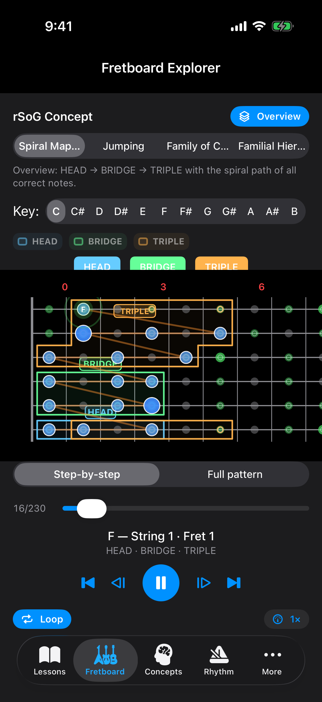
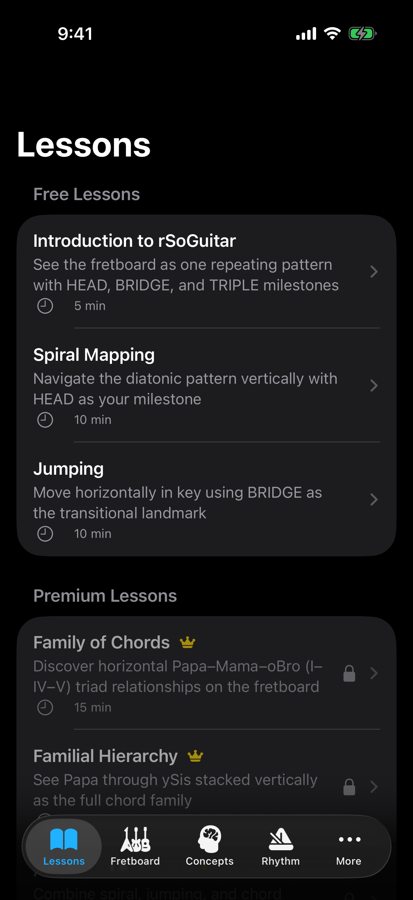
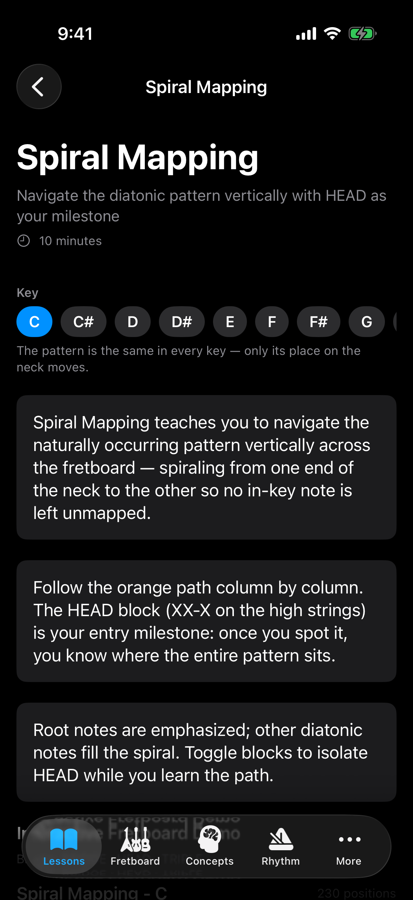
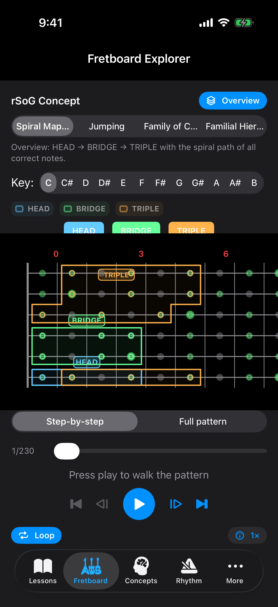
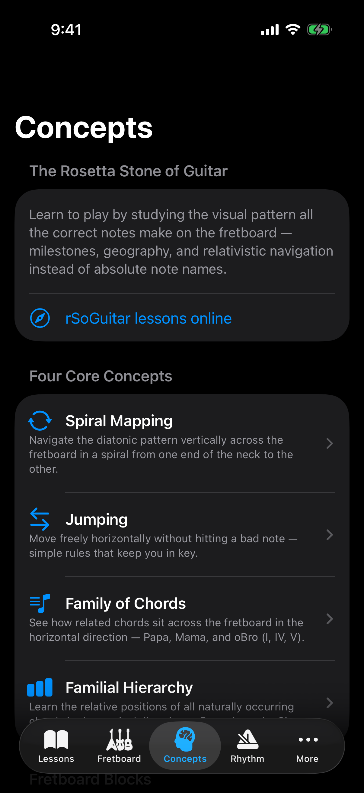
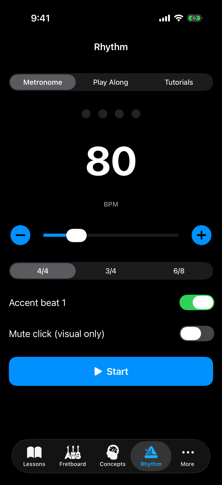

Spiral Mapping
Navigate the naturally occurring pattern vertically across the fretboard, spiraling from one end of the neck to the other, leaving no in-key note unmapped.
The Rosetta Stone of Guitar
Traditional theory studies the staff. This method studies where your eyes already look: the neck. One repeating diatonic geography. Three milestones. Four ways to move.

Captured from the iOS simulator
Press play in Fretboard Explorer and the pattern steps note by note: three notes per string, low E to high E, then the wrap back onto low E. The HEAD → BRIDGE → TRIPLE cycle moves with you.
Same shape in every key. Only the place on the neck changes.
Screenshots from the current iOS build: lessons, the Spiral Mapping lesson, Fretboard Explorer, Concepts, and the metronome.





From the original rSoGuitar method by Frederic Pool — now interactive on the phone.
Navigate the naturally occurring pattern vertically across the fretboard, spiraling from one end of the neck to the other, leaving no in-key note unmapped.
Simple rules that let you move freely in the horizontal direction without hitting a bad note or getting lost.
See how Papa, Mama, and oBro (I, IV, V) sit across the fretboard in the horizontal direction.
Learn the relative positions of all the naturally occurring chords in the vertical direction — Papa through ySis.
Once you can see HEAD, BRIDGE, and TRIPLE, you know where the entire pattern sits — two blocks from the bank, not longitude and latitude.
HEAD
XX-X. The entry landmark. In home position you often see the partial on low E.
BRIDGE
X-XX. The transitional zone on A and D — where position shifts start to feel natural.
TRIPLE
X-X-X. Three strings, every other half-step. The third row wraps onto low E. That wrap is the helix.
“Suddenly the fretboard was deciphered. It all made sense. It was like someone had given me, well, a Rosetta Stone of Guitar.”
Guitar Noise review of the original method
The book is ~30 pages. The app is the same geography, playable. If it works for you, you may be a little angry nobody showed it this way sooner.